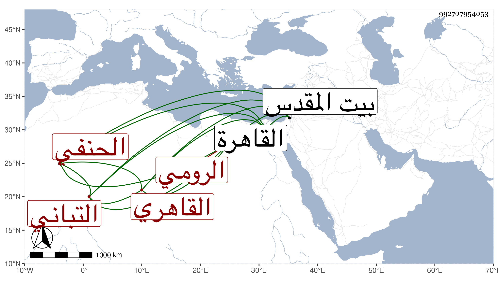

0902Sakhawi.DawLamic.ITO20230111-ara1.EIS1600.992707954053
Biography ID: 992707954053
1109
يعقوب بن جلال بن أحمد بن يوسف الشرف ويسمى أيضا أحمد بن إجلال الدين ويسمى أيضا رسولا الرومي القاهري التباني لسكناه بالتبانة خارجها الحنفي ويعرف بالتباني . ولد سنة ستين وسبعمائة تقريبا وتفقه على أبيه وغيره ومهر في العربية والمعاني والبيان والعقليات وكان يستحضر كثيرا من فروع الحنفية وأحب الحديث وشرع في شرح المشارق ، كل ذلك مع بشاشة الوجه وطلاقة اللسان وكرم النفس جودا وسخاء ممن درس وأفتى وأول ما ولي تدريس مدرسة الجاي وخطابتها وإمامتها في حدود سنة تسعين ثم مشيخة تربة قجا السلحدار وكذا ولي مشيخة قوصون مدة لكنه رغب عنها ثم ولي نظر القدس بعناية أيتمش ثم صرف عنه وجرت له مع الناصر فرج خطوب ثم اتصل بالمؤيد فعظم قدره وولي في أيامه مشيخة الشيخونية ونظر الكسوة ووكالة بيت المال ثم صرف عن الكسوة خاصة بسبب جائحة حصلت له مع الدوادار بسببها ولو تصون ما تقدمه أحد ولذا بعد المؤيد رقت حاله جدا حتى مات فجأة في صفر سنة سبع وعشرين وقد زاد فيما قاله العيني على السبعين ، واستقر بعده في الوكالة نور الدين السفطي شاهد الأمير الكبير وفي الشيخونية السراج قارئ الهداية . ذكره شيخنا في أنبائه ، وفي تاريخ ابن خطيب الناصرية الشرف يعقوب ابن فقيه بن أحمد الرومي ثم المصري الحنفي بن التباني كان إماما فاضلا مستحضرا حسن الشكالة ولي وكالة بيت المال بالقاهرة ونظر الحرمين ثم في أيام الأشرف برسباي مشيخة الشيخونية واستمر فيها حتى مات ، وأظنه هذا ولكن قوله في أيام الأشرف سهو ، وقال بعضهم كان ذا همة عالية ومكارم وصدقة وبر وإيثار وكلمة مسموعة ووصلة بالأمراء والأكابر سيما وقد اختص بالمؤيد فتزايدت ضخامته وتردد الناس إليه لحوائجهم مع الديانة والصيانة .
